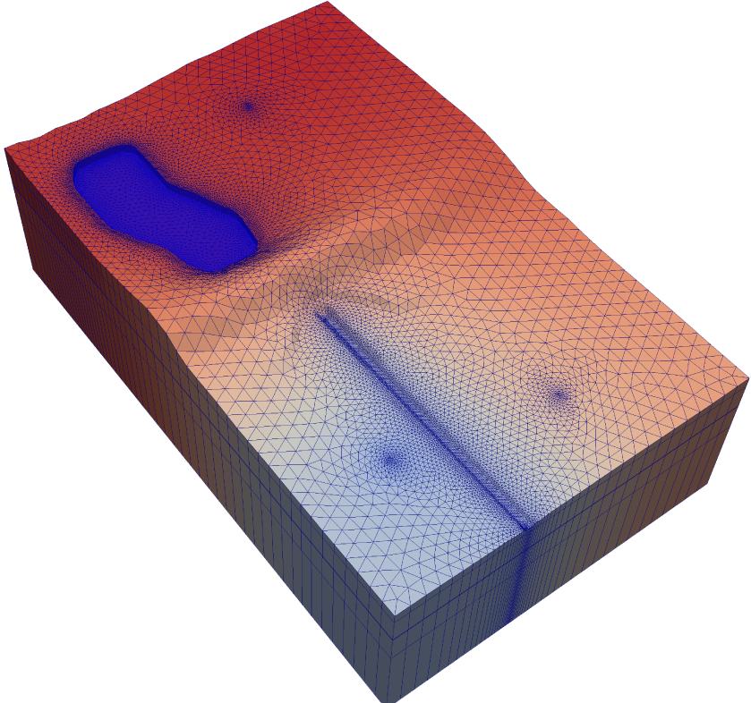
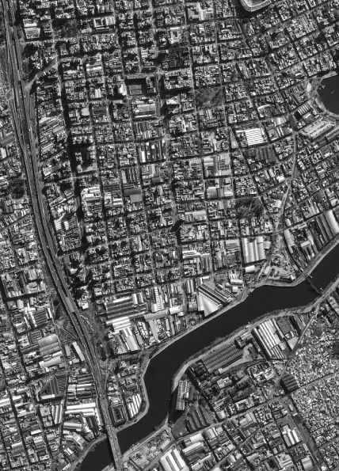
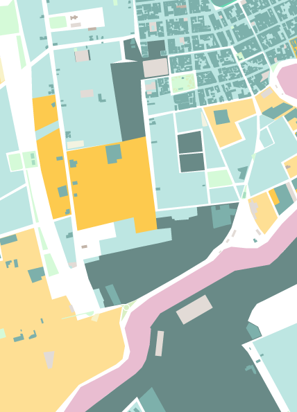

Gauss
modelado ambiental
Modelos de simulación con fines regulatorios
Consultoría, desarrollo y soporte técnico
Modelado
matemático
aplicado
al
ambiente
MODELADO
Calidad del Aire
Simulamos la calidad del aire para fuentes emisoras, utilizando software reconocido internacionalmente y aprobado por autoridades regulatorias locales.
Utilizamos modelos atmosféricos y de calidad de aire de distinta complejidad según la naturaleza del problema a resolver. Contamos con modelos gaussianos para screening, estacionarios (pluma), transitorios (puff) recomendados por las autoridades regulatorias tales como AERSCREEN, AERMOD, y CALPUFF.
También modelamos la química atmosférica con modelos numéricos en diferencias finitas acoplados a modelos meteorológicos (WRF-Chem, Chimere, CMAQ, entre otros).
Debido a la sensibilidad de los modelos de transporte de contaminantes a la meteorología, realizamos un procesamiento y control de calidad adicional de estos datos.
Ver más
Ver menos
MODELADO
Aguas subterráneas
Modelamos el movimiento de contaminantes en medios porosos saturados y no saturados mediante el sistema MODFLOW desarrollado por el USGS.
MODFLOW permite simular el flujo tridimensional de agua en medios porosos. A partir de módulos como MODPATH y MT3D es posible el modelado matemático del transporte de solutos.
Consideramos la interacción del agua subterránea con la superficie, cuerpos de agua superficiales, flujos en acuíferos kársticos e intrusiones salinas entre otros.
La caracterización hidrogeológica del medio a modelar y los parámetros hidráulicos de las formaciones son esenciales
en la definición del sistema, por lo que realizamos controles adicionales de la calidad de esta información.
Ver más
Ver menos

MODELADO
Aguas superficiales
Modelamos el transporte de especies químicas en ríos y lagos mediante modelos desarrollados y recomendados por EPA tales como WASP y AQUATOX entre otros.
WASP es uno de los modelos más utilizados para el modelado del transporte de contaminantes en cuerpos de agua superficiales.
Permite simular diversos procesos tales como la eutrofización y el transporte de contaminantes orgánicos e inorgánicos bajo distintas condiciones meteorológicas y de carga.
Este tipo de modelos procesan múltiples compuestos en simultáneo contemplando la cinética química propia de cada especie modelada.
Ver más
Ver menos



Soluciones GIS
Explotamos la dimensión espacial de tu proyecto para darte nuevas
perspectivas. Generamos cartografía digital en ambientes web.
Realizamos estudios ambientales mediante el uso de herramientas de análisis
espacial.
Servicios
Trabajamos en las principales demandas profesionales en materia ambiental.
Evaluaciones de Impacto Ambiental
Realización y gestión administrativa
Realizamos proyectos de evaluación de impacto ambiental, con el componente diferencial de poder dar apreciaciones cuantitativas de impacto a partir de procesos de modelado.
Formamos equipos de profesionales independientes ajustados a las necesidades de cada proyecto, asegurando contar con referentes en cada disciplina requerida.
Acompañamos el proceso técnico administrativo desde los procesos de cada autoridad de aplicación, con profesionales habilitados por las mismas, llegando hasta la obtención del certificado o permiso ambiental.
Sitios contaminados
Análisis de Riesgo y caracterización
Aplicamos las herramientas de modelado al estudio de sitios contaminados infiriendo
las concentraciones de contaminantes en los componentes del ambiente a partir de muestras puntuales.
Mediante el proceso de modelado estandarizado por ASTM E 1739 e IRAM 29590,
se determinan acciones correctivas basadas en riesgo (RBCA), definiendo valores objetivos de remediación sitio-específicos.
Efluentes gaseosos
Gestión de permisos y modelado de dispersión
Ante una descarga de efluentes fuera de parámetro, conviene
aplicar un modelo como AERMOD o CALPUFF según el caso.
En situaciones críticas, se ultiman los recursos computacionales a partir de un modelado numérico mediante WRF-Chem. Estos modelos aplican tanto a monitoreos regulares como a emergencias.
Caracterizamos los procesos asociados a las descargas de efluentes para la obtención de los permisos o licencias requeridos por las autoridades, inclusive sectoriales como el ENRE.
Gestión ambiental
Implementación y auditorías
Acompañamos procesos de implementación de normas ISO de gestión ambiental y participamos como auditores internos.
Damos soporte en el seguimiento de indicadores y agilizamos los procesos internos automatizando la gestión de la información.
Asistimos en componentes críticos de los sistemas de gestión ambiental como el seguimiento de requisitos legales y realización de matrices de aspectos e impactos ambientales.
Formación de personal
Desarrollo de contenido a medida
Realizamos capacitaciones orientadas tanto a introducir como profundizar contenido específico de modelado ambiental, herramientas de programación, sistemas de información geográfica y gestión ambiental.
Adicionalmente brindamos contenidos ambientales para audiencias generales, como gestión de residuos, uso racional de recursos naturales y respuesta ante emergencias ambientales.

Creamos Tox.db: una base de datos abierta a la comunidad de profesionales del ambiente y la salud que compila información relevante de los compuestos químicos de interés regulados. Es una plataforma abierta en constante crecimiento.
Desarrollamos y mantenemos bases de datos con aplicaciones ambientales con el fin de agilizar el acceso y manejo de información.
Ir a Tox.db
Contacto
¿En qué podemos ayudarte?
¿Querés unirte al grupo?
¡Contanos tu historia!
join@gauss-ma.com.ar
modelado ambiental
Modelos de simulación con fines regulatorios
Consultoría, desarrollo y soporte técnico
MODELADO
Calidad del Aire
Simulamos la calidad del aire para fuentes emisoras, utilizando software reconocido internacionalmente y aprobado por autoridades regulatorias locales.
Utilizamos modelos atmosféricos y de calidad de aire de distinta complejidad según la naturaleza del problema a resolver. Contamos con modelos gaussianos para screening, estacionarios (pluma), transitorios (puff) recomendados por las autoridades regulatorias tales como AERSCREEN, AERMOD, y CALPUFF.
También modelamos la química atmosférica con modelos numéricos en diferencias finitas acoplados a modelos meteorológicos (WRF-Chem, Chimere, CMAQ, entre otros).
Debido a la sensibilidad de los modelos de transporte de contaminantes a la meteorología, realizamos un procesamiento y control de calidad adicional de estos datos.
MODELADO
Aguas subterráneas
Modelamos el movimiento de contaminantes en medios porosos saturados y no saturados mediante el sistema MODFLOW desarrollado por el USGS.
MODFLOW permite simular el flujo tridimensional de agua en medios porosos. A partir de módulos como MODPATH y MT3D es posible el modelado matemático del transporte de solutos.
Consideramos la interacción del agua subterránea con la superficie, cuerpos de agua superficiales, flujos en acuíferos kársticos e intrusiones salinas entre otros.
La caracterización hidrogeológica del medio a modelar y los parámetros hidráulicos de las formaciones son esenciales en la definición del sistema, por lo que realizamos controles adicionales de la calidad de esta información.
MODELADO
Aguas superficiales
Modelamos el transporte de especies químicas en ríos y lagos mediante modelos desarrollados y recomendados por EPA tales como WASP y AQUATOX entre otros.
WASP es uno de los modelos más utilizados para el modelado del transporte de contaminantes en cuerpos de agua superficiales. Permite simular diversos procesos tales como la eutrofización y el transporte de contaminantes orgánicos e inorgánicos bajo distintas condiciones meteorológicas y de carga.
Este tipo de modelos procesan múltiples compuestos en simultáneo contemplando la cinética química propia de cada especie modelada.
Soluciones GIS
Explotamos la dimensión espacial de tu proyecto para darte nuevas perspectivas. Generamos cartografía digital en ambientes web. Realizamos estudios ambientales mediante el uso de herramientas de análisis espacial.
Servicios
Trabajamos en las principales demandas profesionales en materia ambiental.
Evaluaciones de Impacto Ambiental
Realización y gestión administrativa
Realizamos proyectos de evaluación de impacto ambiental, con el componente diferencial de poder dar apreciaciones cuantitativas de impacto a partir de procesos de modelado.
Formamos equipos de profesionales independientes ajustados a las necesidades de cada proyecto, asegurando contar con referentes en cada disciplina requerida.
Acompañamos el proceso técnico administrativo desde los procesos de cada autoridad de aplicación, con profesionales habilitados por las mismas, llegando hasta la obtención del certificado o permiso ambiental.
Sitios contaminados
Análisis de Riesgo y caracterización
Aplicamos las herramientas de modelado al estudio de sitios contaminados infiriendo
las concentraciones de contaminantes en los componentes del ambiente a partir de muestras puntuales.
Mediante el proceso de modelado estandarizado por ASTM E 1739 e IRAM 29590,
se determinan acciones correctivas basadas en riesgo (RBCA), definiendo valores objetivos de remediación sitio-específicos.
Efluentes gaseosos
Gestión de permisos y modelado de dispersión
Ante una descarga de efluentes fuera de parámetro, conviene
aplicar un modelo como AERMOD o CALPUFF según el caso.
En situaciones críticas, se ultiman los recursos computacionales a partir de un modelado numérico mediante WRF-Chem. Estos modelos aplican tanto a monitoreos regulares como a emergencias.
Caracterizamos los procesos asociados a las descargas de efluentes para la obtención de los permisos o licencias requeridos por las autoridades, inclusive sectoriales como el ENRE.
Gestión ambiental
Implementación y auditorías
Acompañamos procesos de implementación de normas ISO de gestión ambiental y participamos como auditores internos.
Damos soporte en el seguimiento de indicadores y agilizamos los procesos internos automatizando la gestión de la información.
Asistimos en componentes críticos de los sistemas de gestión ambiental como el seguimiento de requisitos legales y realización de matrices de aspectos e impactos ambientales.
Formación de personal
Desarrollo de contenido a medida
Realizamos capacitaciones orientadas tanto a introducir como profundizar contenido específico de modelado ambiental, herramientas de programación, sistemas de información geográfica y gestión ambiental. Adicionalmente brindamos contenidos ambientales para audiencias generales, como gestión de residuos, uso racional de recursos naturales y respuesta ante emergencias ambientales.
Creamos Tox.db: una base de datos abierta a la comunidad de profesionales del ambiente y la salud que compila información relevante de los compuestos químicos de interés regulados. Es una plataforma abierta en constante crecimiento.
Desarrollamos y mantenemos bases de datos con aplicaciones ambientales con el fin de agilizar el acceso y manejo de información.
Contacto
¿En qué podemos ayudarte?
¿Querés unirte al grupo?
¡Contanos tu historia!